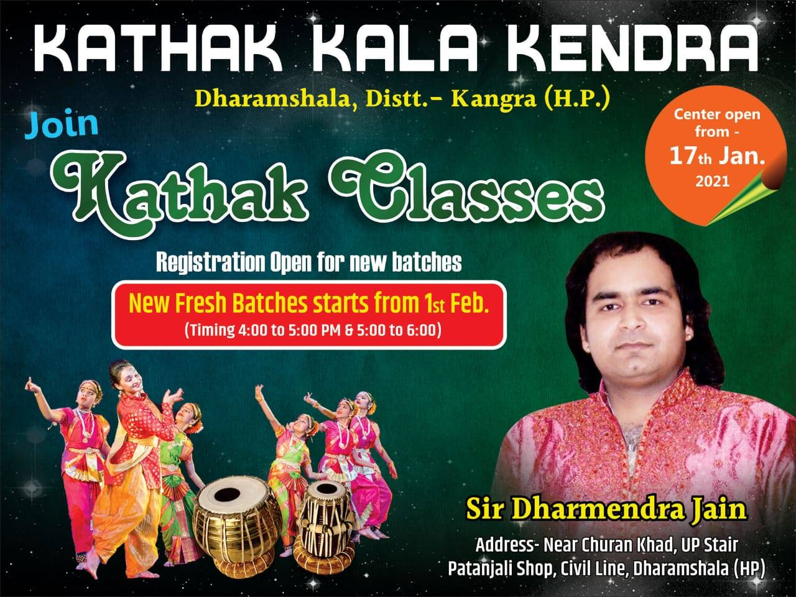
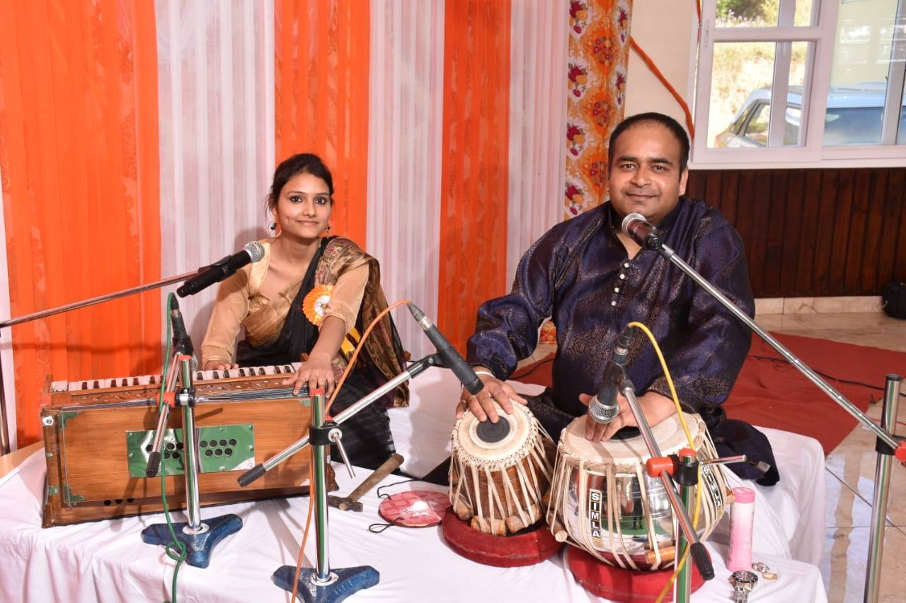
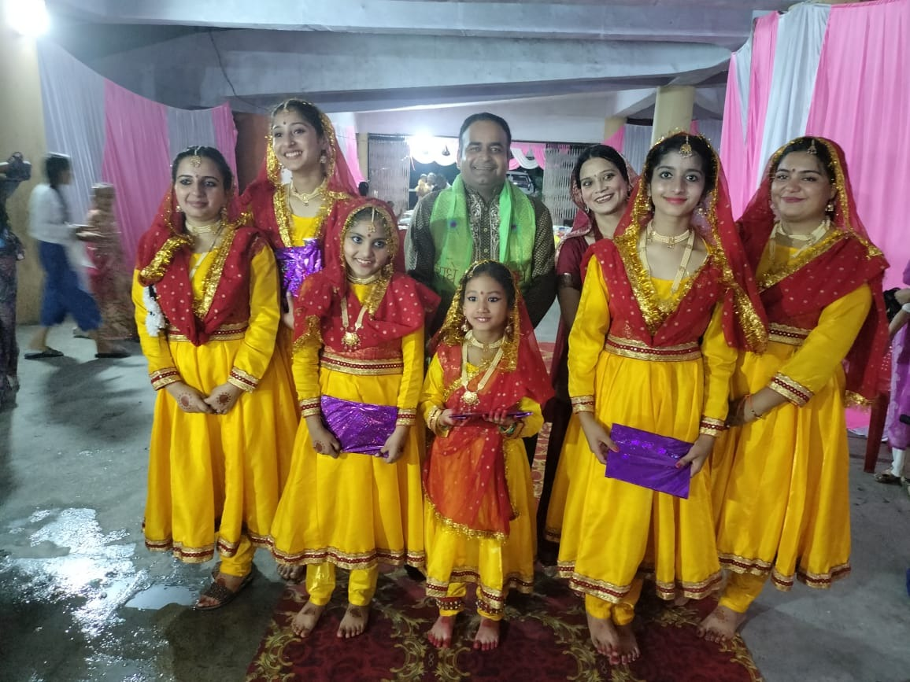
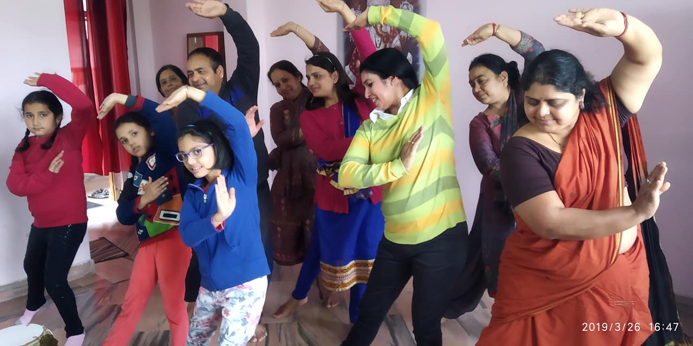
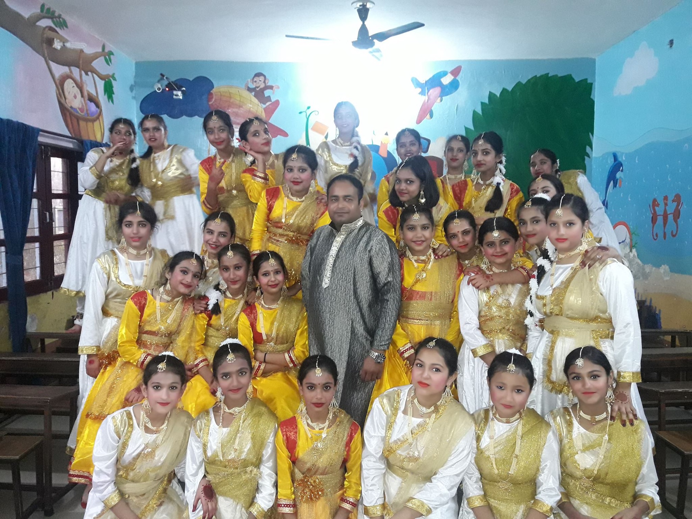

Kathak Kala Kendra
Designing a webpage for a Kathak dance school based in India. This was made to surprise my teacher of 15 years.
Overview
I noticed that my dance teacher didn't have a website to showcase his work and connect with potential students. I wanted to surprise him with a platform that would not only highlight his expertise in Kathak but also provide an easy way for people to learn about the dance form and get in touch with him for classes.
His studio is based in Dharamshala, India, and he has been teaching Kathak for over 30 years. The goal of the website was to create a visually appealing and user-friendly platform that would attract students from around the world and provide them with all the necessary information about his classes, workshops, and performances.

The Challenge
- How can I create a website that effectively showcases my teacher's expertise in Kathak and attracts potential students, while also being easy to navigate and visually appealing?
- Since my teacher is not tech-savvy and internet is limited in Dharamshala, how can I develop this website so that it's accessible and responsive across all devices?
- As the only designer, what system could I create that is scalable and adaptable for future growth - something that even my teacher can easily update and manage?

Process
I followed a user-centered design process that involved the following steps:
- Deciding the goals of this project for my teacher:
What would he like to showcase the most? Is this feasible within the constraints of his limited technical knowledge and internet access? - Ideation:
Creating a low fidelity prototype and wireframe that I can show some of his students for feedback. - Content curation:
Gathering studio photography, performance imagery, and class highlights to tell his story. - Design & Develop:
Developing the website with Squarespace. - Implementation and handoff:
Host the website and share with my teacher to ensure he can manage it easily.




Impact & Outcomes
After developing the website, I shared it with my teacher and his students. The feedback was overwhelmingly positive, with many expressing excitement about the new platform and its potential to attract more students to his classes. My teacher was particularly pleased with how the website showcased his expertise and made it easy for people to learn about Kathak and get in touch with him.
Reflections
I was very happy to be able to create this website for my teacher and provide him with a platform to showcase his work. It was a rewarding experience to see how the website could help him connect with potential students and share his passion for Kathak with a wider audience. This project also taught me a lot about user-centered design and the importance of considering the needs and constraints of the end user when developing a solution.